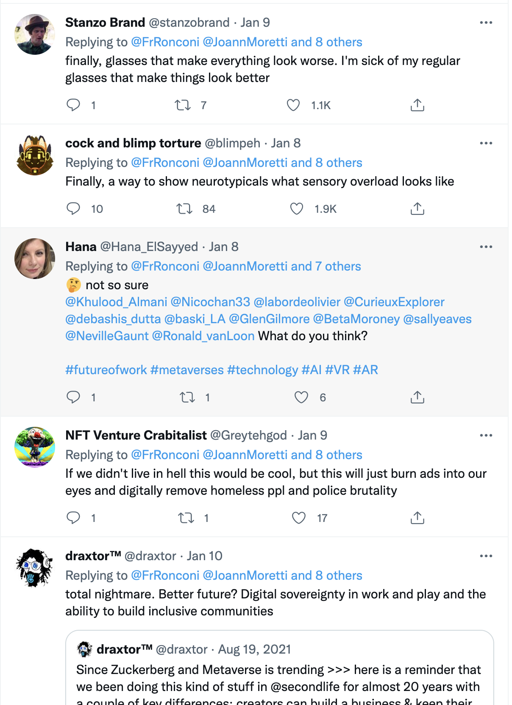
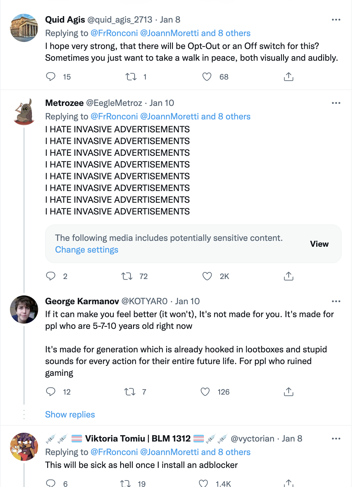
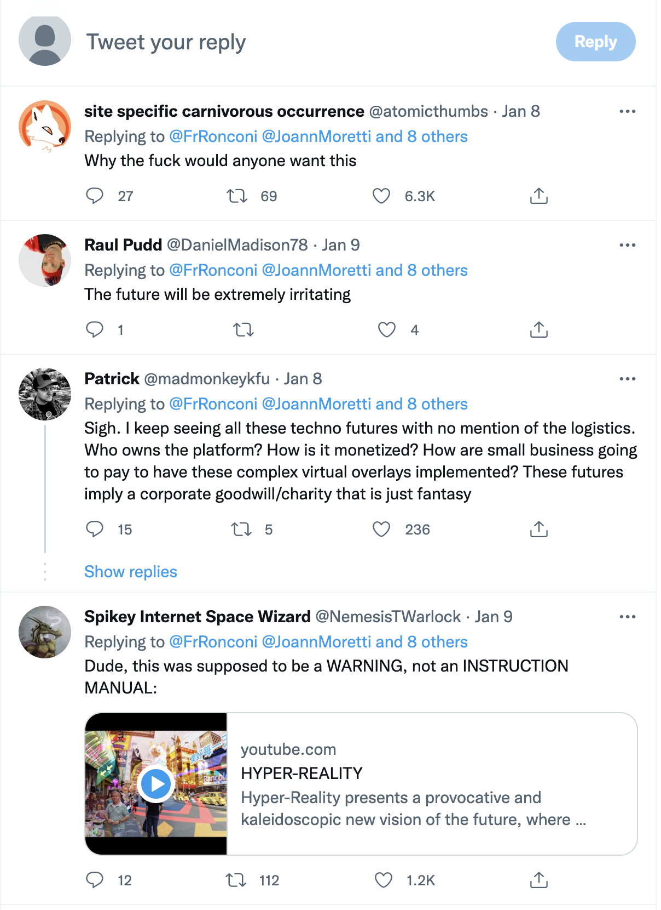

Overview
The International Consumer Electronics Show (CES), sponsored by the Consumer Electronics Manufacturers Association (CTA),
aims to promote the close integration of cutting-edge electronic technology and modern life.
CES in 2022 took place on January 5th-7th local time (PTC) in Las Vegas. Media launch took place on January 3rd and 4th,
so discussions about CES gained attention before the exhibition officially began. Because there are many products at the exhibition,
the hot points of each day are different. Therefore, this report uses the tag #ces2022
to obtain the twitter data of the day before the exhibition,
during the exhibition and the day after the exhibition to conduct a comparative analysis to discuss whether people's daily attention is focused and what the key contents after the entire exhibition are.
This report uses the search API to obtain the data of the day before the exhibition (4th) and the three-day period of the exhibition, and uses the streaming API to obtain the data of the whole day (8th) after the exhibition ends. The tools for data processing are mainly EXCEL and wordcloud. The report has line charts and histogram made using echarts. The overall layout of the page adopts the basic template of UIkit, which adds and deletes some CSS styles and imporrts Google fonts to optimize the layout, whcih seem do not work on the heading and haven't figure out why.
Restricted by twitter-related regulations, the data obtained from the first four days using the search API does not last for 24 hours. But their total amount is the same. Therefore, it can be judged by comparing the time it took to reach 18,000 tweets that the discussion on the first day (5th) of the exhibition was the highest. The discussion heat diminishes over time. At the same time, it can be seen that the volumes of each day basically shows a trend from high to low, which corresponds to the opening hours of the exhibition (9:00/10:00-16:00).
The slope of line 5th is the steepest. Obviously, on the first day of the exhibition, people were more excited, and all kinds of information about consumer electronics were widely posted on twitter. Every day after that, the changes in tweets tended to be flat, indicating that some of the products poped out and became the objects of continuous discussion, that are, star products. This report will further analyze the hot topics discussed by people. Therefore, the data after the exhibition (8th) is mainly selected for textual exploration.
Tweets and Retweets
First, the report uses word cloud analysis to compare the differences in the content of discussions on a daily basis. Five wordclouds show that on the 4th, 5th and 6th, people's discussions are more focused on certain specific products and technologies. On January 7th, the last day of the exhibition, people began to summarize the results of the exhibition and celebrate the success of the exhibition, and some conceptual vocabulary began to emerge. On January 8th, after the show officially ended, discussions around CES emerged as more technical concepts than specific products and equipment. People look to the future, thinking about where the new technologies exhibited at the exhibition can be applied and the future direction of technological development.
| 4th: GeForce, Samsung, automated, recyled | 5th: Togg, Samsung, mobility, electronics | 6th: Togg, Car, Samsung, BMW |
| 7th: Coway, celebrate, metaverse | 8th: Coway, metaverse, MR, AR, AI, blockchain, car, medical, gbps | |
Below are the five most retweeted tweets between 8am UK time on January 8 and 8am UK time on January 9.
Coway is a Korean living environment appliance company, with products designed for water purification, air purification and sanitary ware industries. The reason for the high retweets of this tweet is mainly because of its brand ambassador. Coway's global brand ambassador, BTS, is a K-pop group that is well known around the world, so their fans contribute a lot of retweets.
Takafumi Kuno's tweet is about BMW's variable colour body car. "an electronic ink sheet", "the prototype feels crunchy", she thinks the car using the new material is amazing. Judging from the amount of forwarding, BMW's new products have indeed received a lot of attention. Another interesting data analysis finding is that many tweets about BMW are written in Japanese, not just this one.
Jeff Watney and Vitaliy posted tweets about the experience of using RACA's virtual wearables.
The metaverse
is at the center of the discussion.
RACA is an acronym for Radio Caca.
"RACA is a decentralized organization (DAO) operated by internet-native individuals all over the globe who share a single vision of building a brave new virtual world."It seems that the concept of the Metaverse has become a representation of the cutting edge of technology in people's minds.
#Coway continuously innovates to provide a clean water, clean air and take care of your daily life.
— Coway Global (@Coway_Global) January 7, 2022
Meet Coway's brand value in the video with Coway global brand ambassador, #BTS
▶️https://t.co/5zTgaEeOmd @BTS_twt @CES#코웨이 #CES2022 #CES #코웨이BTS pic.twitter.com/xvN9jIvLu9
Training for the metaverse.#CES2022 @CES #LasVegas pic.twitter.com/JvjlXv8iNn
— Jeff Watney (@JeffWatney) January 8, 2022
#CES2022 BMWブースの可変色ボディの車、iX Flow！実物みてきました。モノトーンだけですが、近未来感すごい。
— Takafumi Kuno (@quno) January 6, 2022
近寄ってみると電子インクシート？が浮いていたりしてプロトタイプ感バリバリですが、これで出したBMWは素敵だし、こういうのが見れるのがCESの良いところ。 pic.twitter.com/kVyFVgvQ3h
Had a great time meeting #RACA folks this week.
— Vitaliy (@vitaliy_USM) January 9, 2022
After our Jan 7th #CES2022 event, we took 20 minutes to kill over 500 zombies. @USMverse #RACA @RadioCacaNFT pic.twitter.com/Nwjqid02Rl
In the future our lives will be infused by #6G-powered #MixedReality, at a very high speed (up to 200 Gbps) #AR #VR #MR #Metaverse #China #CES2022 @JoannMoretti @CurieuxExplorer @anand_narang @Hana_ElSayyed @TheAdityaPatro @PawlowskiMario @MargaretSiegien @kalydeoo @enilev pic.twitter.com/waTtNYDFGs
— Franco Ronconi üáÆüáπ (@FrRonconi) January 7, 2022
Franco Ronconi's discussion on mixed reality and 6G networks also received a lot of responses. People are paying attention to the wide application and metaverse of virtual reality technology. However, while browsing the thousand or so replies below this tweet, an interesting phenomenon happened. The following are randomly screenshooted replies:
  
Even casual browsing shows that people use a lot of negative words to express resistance to the metaverse and virtual reality.
Are new technologies moving in directions that people don't want? This contradiction deserves further exploration.
This may also be seen in the wordcloud analysis on January 8.
Wordcloud above also shows an incompatible word enemy
. Technology is a double-edged sword, indeed.
People's opinions support this view.
Another point worth noting is that the co-tags of this tweet contain #China
.
Unlike the tweets about togg mobility written in Turkish a few days ago,
there are few related Chinese tweets, but the word China
occupies a relatively large position in wordcloud.
This may be related to the rapid development of China's optical fiber communication technology.
Information transmission is an important basis for realizing virtual reality.
Since CES has gained a lot of mainstream media attention. Numerous news stories listed the show's top or best products and technologies: chips and mobile devices; new concept designs for laptops and monitors; futuristic concept cars; empty promise of virtual reality technology These hotspots are similar to the conclusions drawn from the analysis of tweets above. This shows the reliability of text analysis.
Top and Bot
Next, the report filtered for top twitters and bot accounts.
Seems like to match the tech show, the top 10 twitters are pretty much all robots, obviously. Within 24 hours, their numbers of tweets were too large and some could be identified as bots by their names. Once these bots are @ by other users, they will retweet the content posted by other users. That's why these accounts post a lot of tweets. To some extent, this is also the embodiment of technology, isn't it?
| Username | Tweets number |
|---|---|
|
|
| Username | Description |
|---|---|
| Khulood_Almani | Assistant professor of a university in Saudi Arabia; joined in June 2021; has a linkedin page |
In fact, the results of data processing have shown that none of the top 10 tweets are created by these ten twitters. After looking at the home pages of these ten users, the inference is that only the account whose username is Khulood_Almani may be the human account. She has a detailed background introduction and a LinkedIn page showing her resume. But judging from the large number of tweets forwarded by this account, it is very likely that she used some kind of technology to automatically retweet. And this account has been created for a short time, but it has posted more than 10,000 tweets. It's a bit counterintuitive. The usage of this account is under evaluation.
Frequency and Interaction
Overall, 10,301 users posted and retweeted 22,770 tweets in the 24 hours PTC (8th 8:00-9th 8:00 UK time).
On average, each account posted and retweeted 2.2 tweets. Among them, there are 19,743 retweets, accounting for 87%.
A total of 9059 accounts are retwitters. Among all the tweets, 15 tweets with #ces2022
interact with and reply to other accounts.
The bar chart below shows that the majority of users only posted and retweeted one tweet. At the same time, a few accounts posted hundreds of tweets.
Bots domination, obviously.
Demographics
While no tweets were geo-coded when they were posted, 6,289 accounts were self-located. Screenshot of /table/ geolocation. Interestingly, although many people's attitude towards metaverse is not positive, users from metaverse are the most. Secondly, there are also many users located in France.
| Location | number |
|---|---|
| Paris, France | 307 |
| Earth | 285 |
| Dhaka, Bangladesh | 269 |
| Atlantic ocean | 267 |
| India | 240 |
| Kingdom of Saudi Arabia | 240 |
| Europe | 224 |
| Marseille, France | 216 |
| Jammu And Kashmir | 160 |
Conclusion
To sum up, mobile devices led by automobiles, digital health, artificial intelligence and other fields are the hot areas shown at this exhibition. Related industries such as virtual reality technology and chip manufacturing may be the key development directions of future technologies. But compared to conceptual products that have yet to take shape, electronic devices and smart home-related exhibits are more likely to be promoted to the market and become mass consumer goods.
From a design point of view, the use of wearable devices to create virtual reality is most likely to be the first to be widely used in game design, and the automotive-centric electronic device ecosystem has been largely suspended, and artificial intelligence has a broad application prospect in smart homes.
From a marketing point of view, concepts such as metaverse, games that use various display screens as media to penetrate people's lives, topics such as ecosystem and user experience, virtual and reality, etc. can be possible communication directions.